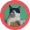

324 amigos na sua cidade
Leve
a felicidade
para o seu lar

324 amigos na sua cidade
324 amigos na sua cidade
Encontre o animal de estimação ideal
para seu estilo de vida!
O FindAFriend é um produto desenvolvido para você encontrar o animal de estimação ideal ao seu estilo de vida!
ONGs cadastram os bichinhos disponíveis para adoção informando características como: porte, nível de energia, nível de independência, sociabilidade e gênero.
Filtre os bichinhos de acordo com suas preferências e lifestyle. Depois é só entrar em contato com a ONG para agendar uma visita e conhecer pessoalmente seu match perfeito!
O FindAFriend é um produto desenvolvido para você encontrar o animal de estimação ideal ao seu estilo de vida!
ONGs cadastram os bichinhos disponíveis para adoção informando características como: porte, nível de energia, nível de independência, sociabilidade e gênero.
Filtre os bichinhos de acordo com suas preferências e lifestyle. Depois é só entrar em contato com a ONG para agendar uma visita e conhecer pessoalmente seu match perfeito!